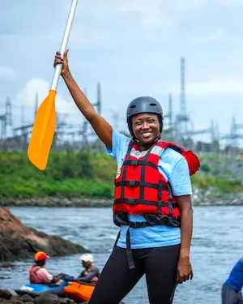

At West Coast Rapids, we believe adventure should be accessible, exhilarating, and unforgettable. Nestled in the heart of the Pacific Northwest, our team of passionate guides brings decades of experience navigating the region’s most iconic rivers.


At West Coast Rapids, we believe adventure should be accessible, exhilarating, and unforgettable. Nestled in the heart of the Pacific Northwest, our team of passionate guides brings decades of experience navigating the region’s most iconic rivers.
West Coast Rapids began as a small group of river enthusiasts with a dream: to share the magic of whitewater with others. From humble beginnings offering weekend trips on the White Salmon River, we’ve grown into a trusted outfitter spanning Washington, Oregon, and California. Our legacy is built on respect for nature, love for adventure, and a commitment to creating lifelong memories—one splash at a time.
Over the years, West Coast Rapids has built strong ties with local communities and conservation groups, helping preserve the rivers we love for future generations. Our guides not only know the rapids—they know the stories, the wildlife, and the hidden gems along every bend. As our reputation grew, so did our commitment to sustainability, education, and creating unforgettable experiences that honor the natural beauty of the West Coast.